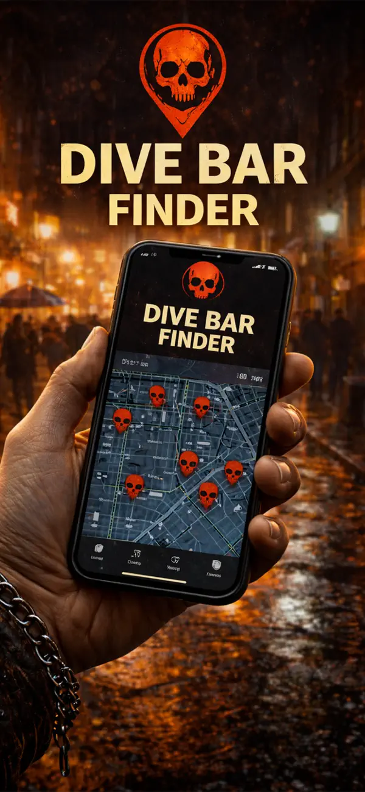
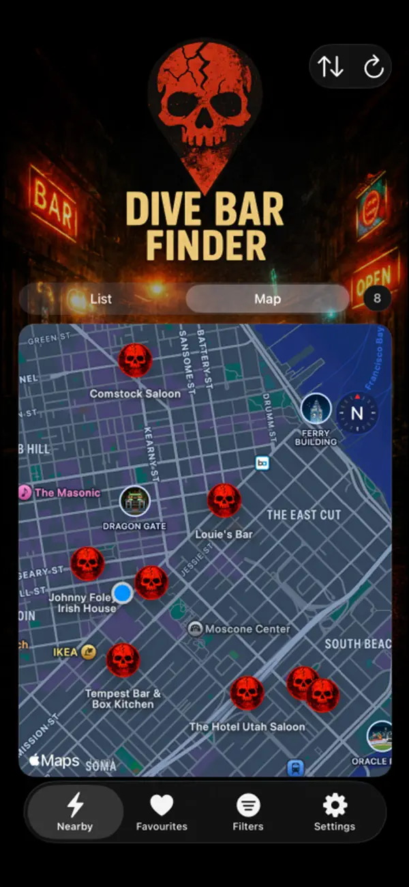
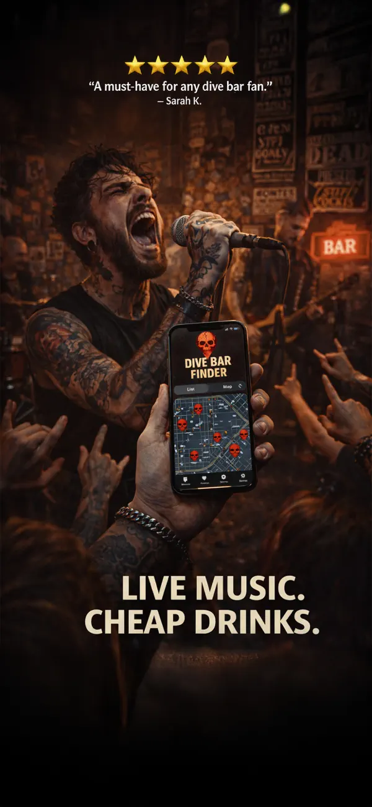
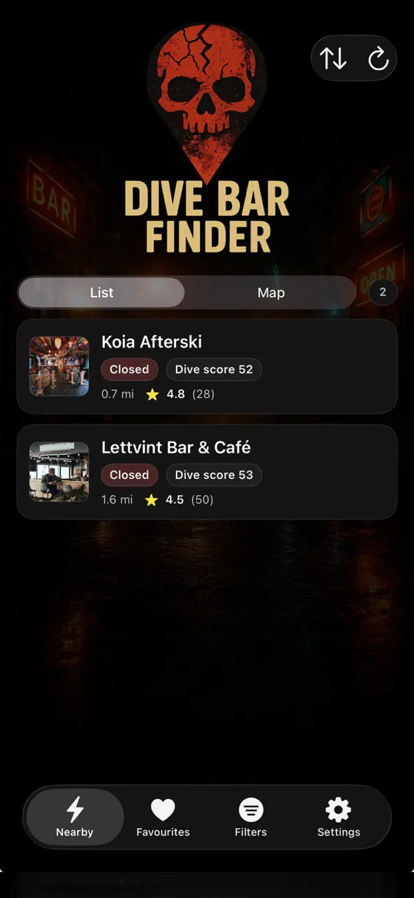
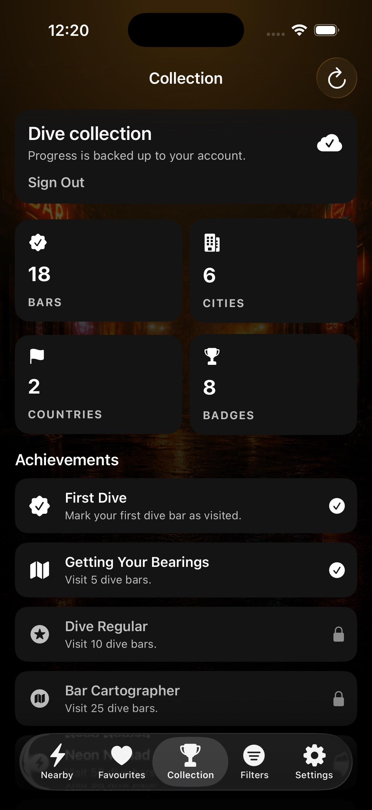

01
See what’s nearby
Browse a fast list or map of nearby bars with distance, opening status, ratings and Dive Score at a glance.
Discover dive bars near you—plus punk, goth, rock, metal and alternative spots normal nightlife apps miss. Less scrolling. Fewer tourist traps. Better places to drink.
Free to download · In-app purchases · Requires iOS 17+

Open the app, set the mood and get out the door. Dive Bar Finder brings the essential details into one place so you can spend less time researching and more time finding your next favourite.
Browse a fast list or map of nearby bars with distance, opening status, ratings and Dive Score at a glance.
Choose dive, punk, goth, rock, metal or alternative—and tune strictness when you only want stronger evidence.
Check venue details, photos, reviews and hours, then open directions in Apple Maps or Google Maps.
Every live App Store screenshot, from nearby discovery to the collection you build one check-in at a time.



Look beyond generic “bars near me” results and focus on places that match the atmosphere you actually want.
Dive. Punk. Goth. Rock. Metal. Alternative. Select one or mix them.
Save favourites so a great late-night find does not disappear into your camera roll.
Check in, track bars and cities, unlock achievements and build a record of the places worth going back to.

Every check-in becomes part of your personal dive-bar history. Track the bars, cities and countries you have explored, then unlock achievements that give you another reason to find somewhere unexpected.
Practical answers for the searches that happen when you are in a new city, planning a night out or simply tired of the same recommendations.
How to find the real ones without losing half the night to reviews.
Find punk bars, DIY venues and the edges of a local scene.
How to narrow the search by sound, atmosphere and evidence.
Find dark alternative nightlife without relying on stale lists.
Spot independent places with character and dodge tourist traps.
A quick system for finding your kind of bar in an unfamiliar city.
Neighbourhood-first field notes for New York, Los Angeles, Austin, Tokyo, Berlin, Paris, Melbourne and more—each built around the way that city actually works after dark.
Explore every city guideA neighbourhood-first guide to dive bars, punk rooms, rock and metal venues, goth nights and bars beyond the tourist trail.
Open the London guide ↗For late nights, touring bands, travellers, locals, weirdos and music fans. The bars you would actually drink in are closer than you think.